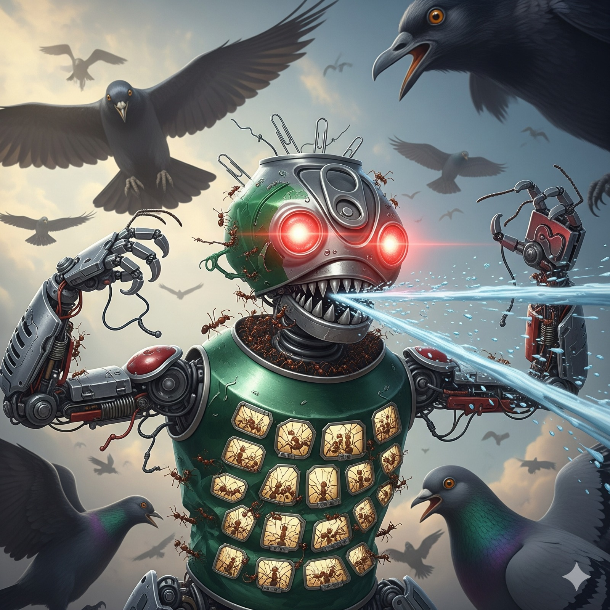

🦾 Formigas constroem robô gigante para enfrentar pássaros
No Multiverso 105-M, a ameaça constante de pássaros predadores levou as formigas a criarem uma solução radical: um robô gigante feito de sucata humana.
Batizado de Ant-Mecha, o robô tem corpo de latinha de refrigerante, braços de clipes metálicos e olhos de LEDs encontrados em um ferro-velho. Operado por centenas de formigas no seu interior, o mecha é capaz de espantar até corvos gigantes com seus rugidos metálicos. “Durante séculos fomos vistos como presas fáceis. Agora, os céus também vão nos respeitar”, declarou a comandante General Antônia de Ferro, responsável pelo projeto. O Ant-Mecha já venceu sua primeira batalha contra um bando de pombos famintos, que fugiram em desespero após ver o robô cuspir jatos de vinagre. Cientistas humanos que observaram o evento através de drones estão em choque. Um deles comentou:
Se as formigas já têm um robô gigante… o que será do nosso futuro?
